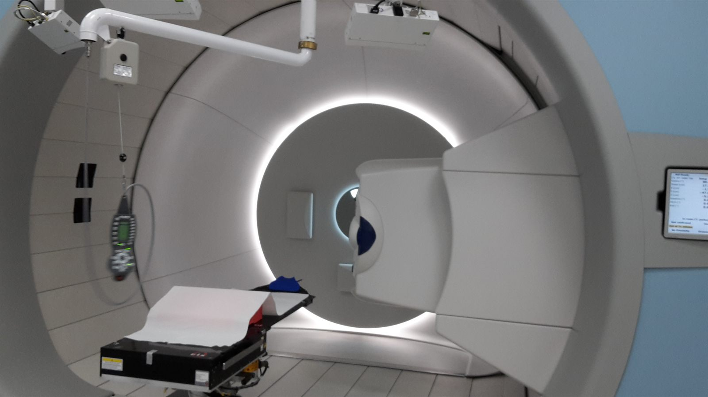

放射治療的副作用與生活品質照護
副作用不是治療的附屬品，而是需要被主動管理的一部分。從急性反應到晚期影響，以及治療期間可以做的事。
閱讀 –

台中・質子治療與放射治療
中國醫藥大學附設醫院 放射腫瘤部・質子治療中心
不只追求腫瘤控制，更重視降低副作用，守護治療後的生活品質。
以科學證據為基礎，協助每位病人選擇適合的放射治療。
共 3 篇．依最後更新時間排序
副作用不是治療的附屬品，而是需要被主動管理的一部分。從急性反應到晚期影響，以及治療期間可以做的事。
閱讀 –
質子治療的價值高度取決於腫瘤位置與病人條件。這篇整理目前證據較充分的適應症，以及評估時真正該問的幾個問題。
閱讀 –
質子與光子最關鍵的差別，在於「布拉格峰」帶來的劑量分布。理解這一點，才能明白質子治療的優勢在哪裡、又不在哪裡。
閱讀 –
我是賴宥良，服務於中國醫藥大學附設醫院 放射腫瘤部・質子治療中心。
門診中我發現，病人與家屬在面對放射治療時，最大的困難往往不是資訊太少，而是資訊太多、太雜、也太難判斷可信度。這個網站是我整理臨床上最常被問到的問題所做的紀錄。
我希望它能做到三件事：把原理說清楚、把選項攤開來、把代價講明白。因為知情之後做出的選擇，才是真正屬於自己的選擇。
網站內容為一般性衛教資訊，無法取代面對面的診療。若您有具體的病情問題，請於門診與您的主治醫師討論。